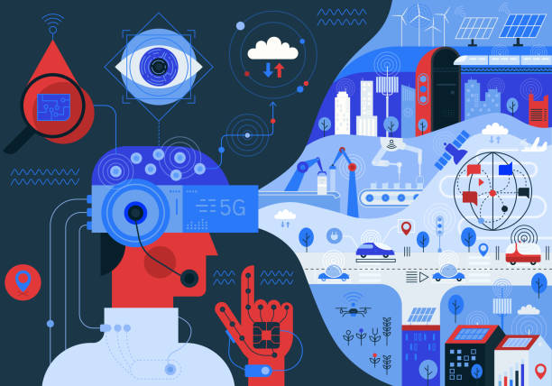

Blog 1:Designing User-Friendly Interfaces with Figma

Introduction
In today’s digital-first world, designing intuitive, engaging, and user-friendly interfaces has become a crucial skill. As a student exploring UI/UX design, I’ve found Figma to be an incredibly powerful and easy-to-learn tool for creating app and website prototypes. In this blog, I’ll share my journey with Figma, some best practices I’ve learned, and why it’s the perfect tool for beginners and professionals alike.
Why Figma?
Figma is a browser-based design tool that’s free, collaborative, and incredibly intuitive. Unlike other tools, it requires no installation and works seamlessly across devices. Features like real-time collaboration, version control, and built-in design elements make it ideal for students like me.
Getting Started with Figma
When I started using Figma, I focused on mastering the basics:
- Frames and Layers: Frames act as your canvas, and layers help you organize elements.
- Components: These reusable design elements save time and ensure consistency.
- Prototyping: Figma’s interactive tools allowed me to link pages and create a working model of my app.
Tips for User-Friendly Design
- Keep it Simple: Users value functionality over flashy designs.
- Focus on Accessibility: Ensure your designs are usable by everyone, including people with disabilities.
- Test Early and Often: Figma’s prototyping feature lets you test designs before development.
Conclusion
Figma has not only simplified my design process but also helped me understand the importance of user-centric thinking. Whether you’re a beginner or a seasoned designer, it’s a tool worth exploring.
Blog2: I Transitioned from Electrical Engineering to Computer Science

Introduction
Changing fields can be daunting, especially when moving from hardware-focused Electrical Engineering to software-driven Computer Science. However, this journey has been both rewarding and transformative for me. Here’s how I made the switch and why it’s been one of the best decisions of my life.
My Background in Electrical Engineering
During my diploma in Electrical Engineering, I worked on projects like an Automatic Solar Tracker and a Health Monitoring System using Arduino. These experiences gave me a foundation in problem-solving, logic, and circuit design, which surprisingly aligned well with programming.
Why the Shift?
While I loved working with hardware, I was drawn to the limitless possibilities of software. The world of coding felt dynamic and exciting, and I wanted to explore how technology could solve real-world problems.
Adapting to Computer Science
The transition wasn’t easy. I had to learn new programming languages like C++, Python, and Kotlin from scratch. Projects in my B.Tech, like working on a mobile app’s front-end and designing interfaces in Figma, helped me build confidence.
Lessons Learned
- Never Stop Learning: Every skill from my Electrical background added value to my current studies.
- Be Patient: Switching fields requires time, effort, and persistence.
- Connect the Dots: My hardware skills often complement my software work, making me a more versatile engineer. My hardware skills often complement my software work, making me a more versatile engineer.
Conclusion
Transitioning from Electrical Engineering to Computer Science has been a journey of growth and discovery. It’s proof that with curiosity and hard work, you can navigate any career path.
Blog 3:The Life of a CSE Student: Challenges, Triumphs, and Late-Night Debugging

Introduction
Life as a Computer Science Engineering (CSE) student is a rollercoaster ride filled with endless lines of code, last-minute project deadlines, and moments of triumph when the code finally works. Here’s a glimpse into my life as a CSE student, with all its highs and lows.
Challenges
- The Steep Learning Curve: From understanding algorithms to mastering new languages like Kotlin, every semester brings its own set of challenges.
- Debugging Nightmares: Late-night debugging sessions have taught me patience and perseverance.
- Balancing Act: Juggling coding, projects, and exams is no small feat, especially when creative design work like Figma is added to the mix.
Triumphs
- The Joy of Problem-Solving: There’s nothing quite like the satisfaction of seeing your code run perfectly after hours of effort.
- Projects That Make a Difference:Whether it’s designing an app’s front-end or working on Arduino-based systems, each project has taught me something new.
- Collaboration and Teamwork:Group projects have helped me learn how to work with others and turn ideas into reality.
What Keeps Me Going
The constant learning and the promise of building something impactful motivate me every day. Even when things get tough, I remind myself why I chose this path: to create, innovate, and solve real-world problems.
Conclusion
Being a CSE student is no easy task, but it’s a journey filled with growth, creativity, and endless opportunities. And while the late nights might be exhausting, they’re also where the magic happens.